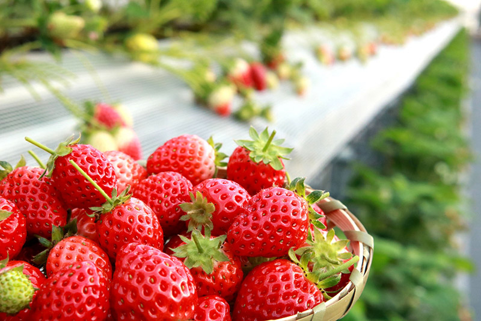
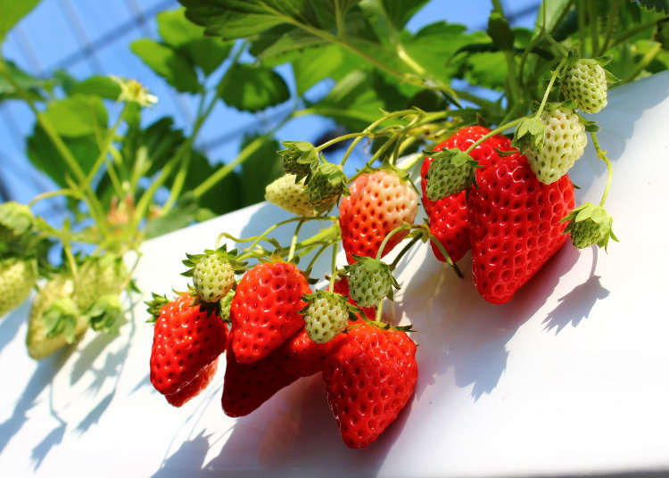

北部
|  |  |
水果介紹 :
桃品種眾多，口感分脆桃和軟桃，果肉有白色和黃色的，一般在日本最受歡迎的品種多為白色果肉，香甜多汁；歐洲、澳洲和北美洲的人則在歷史上喜歡黃色果肉較酸的品種。花可以觀賞，果實多汁，作為水果，可以生食或製桃脯、罐頭等，核仁也可以食用。
怎麼挑 :
選擇果實圓碩飽滿，果形對稱，香氣濃郁的最好，絨毛也要綿密具彈性，看來像上了一層粉霧。外貌顏色均勻，表示它的日曬足夠，甜度也會比較均勻。
營養價值 :
含有蛋白質、脂肪、糖、鈣、磷、鐵和維生素B、C。桃富含果膠，經常食用可預防便秘。中醫認為，桃仁味甘酸，性微溫，具有補氣養血、養陰生津、止咳殺蟲等功效。桃仁的藥用價值，主要在於桃仁中含有苦杏仁甙、脂肪油、揮髮油、苦杏仁酶及維生素B1等。
果園介紹 :